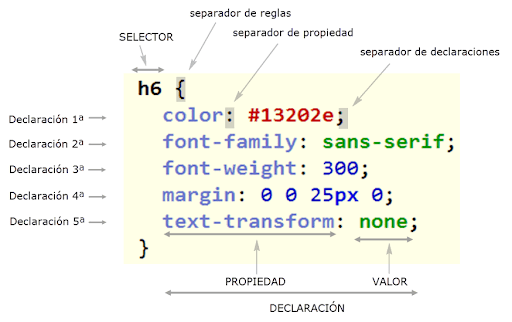

!DOCTYPE html>
tp 06
CSS
1.1¿Qué significa CSS?
CSS significa Cascading Style Sheets o Hojas de Estilo en Cascada. Se utiliza para describir la apariencia y el
formato de un documento escrito en HTML.
1.2¿Para qué sirve el CSS? ¿Qué programa se utiliza para interpretar el CSS?
CSS se utiliza para diseñar páginas web, definiendo cómo se ven elementos como texto, imágenes y otros
componentes. Es interpretado por navegadores web como Chrome, Firefox, Safari, etc.
1.3¿A qué se llama regla de CSS?
Es un patrón de elementos y otros términos que indican al navegador qué elementos HTML se seleccionan para
aplicarles una regla que incluye los valores de las propiedades CSS.
1.4¿Cuál es la anatomía de la regla de CSS? Agregar imagen explicativa y utilizando una lista descriptiva
explicar sus elementos.

Lista Descriptiva de Elementos de CSS
- Selector
- Indica qué elementos del HTML serán afectados por las reglas CSS.
- Propiedad
- Es la característica que se desea modificar, como el color, el tamaño de la fuente o el margen.
- Valor
- El valor asignado a una propiedad, que define cómo se verá el elemento.
- Regla CSS
- Es la combinación de un selector, una propiedad y un valor que aplica un estilo a los elementos
seleccionados.
- Hoja de Estilo
- Es un archivo separado (o un bloque dentro del HTML) donde se colocan las reglas CSS que definen el diseño
de una página.
- Especificidad
- Es el mecanismo que CSS usa para decidir cuál estilo aplicar cuando hay múltiples reglas que afectan a un
mismo elemento.
- Cascada
- El comportamiento de CSS que decide cuál estilo aplicar cuando varias reglas afectan a un mismo elemento,
basado en la especificidad y el orden de las reglas.
1.5¿Qué es un selector en CSS?
Los selectores CSS son herramientas utilizadas para definir el estilo que quieres dar a tus elementos en CSS.
1.6 dentificar y definir los selectores: de ID, de clases, universal, de etiquetas, descendente.
ID: Se aplica a un solo elemento. Usa #.
Clase: Se aplica a varios elementos. Usa ..
Universal: Aplica estilos a todos los elementos. Usa *.
Etiqueta: Aplica estilos a elementos específicos como p, h1.
Descendente: Aplica estilos a elementos dentro de otros elementos.
1.7 Explicar brevemente utilizando una lista ordenada: ¿cómo funciona el CSS?
El funcionamiento del CSS se basa en cómo los estilos son aplicados a los elementos de HTML.
Funcionamiento de CSS
- Carga del HTML
- El navegador primero carga el documento HTML que contiene el contenido estructurado de la página web.
- Carga del CSS
- El navegador también carga y procesa las hojas de estilo CSS vinculadas al HTML o incluidas internamente.
- Interpretación de Reglas CSS
- Las reglas CSS, que incluyen selectores y propiedades, son interpretadas para aplicar los estilos a los
elementos HTML correspondientes.
- Aplicación del Estilo
- El navegador aplica los estilos CSS a los elementos seleccionados, cambiando su apariencia visual según lo
especificado en las reglas.
- Cascada
- Cuando hay múltiples reglas aplicables a un mismo elemento, el navegador decide cuál regla aplicar usando la
especificidad y el orden de las reglas en el archivo CSS.
- Renderizado de la Página
- El navegador muestra la página web en pantalla con los estilos ya aplicados, permitiendo una experiencia
visual consistente y organizada.
1.8 ¿Cuáles son las tres formas para vincular CSS con HTML?
1.CSS Externo: Utilizas un archivo CSS separado que se vincula al HTML. Este método es el más común, ya que
permite separar la estructura (HTML) del estilo (CSS).
2.CSS Interno: El código CSS se coloca dentro de la misma página HTML, pero dentro de la etiqueta style en el
head del documento.
3.CSS en línea: Se aplican los estilos directamente dentro de las etiquetas HTML mediante el atributo style.
1.9 CSS Zen Garden
diferente, lo que demuestra el poder del CSS para cambiar el diseño sin modificar el contenido.
2.0
Propiedades de CSS
- color
- Define el color del texto.
- Valores posibles: Nombre de color (por ejemplo, "red"), código HEX (por ejemplo,
"#ff0000"), RGB (por ejemplo, "rgb(255, 0, 0)").
- background-color
- Define el color de fondo de un elemento.
- Valores posibles: Nombre de color, código HEX, RGB.
- font-size
- Define el tamaño de la fuente del texto.
- Valores posibles: px, em, rem, %, etc. (por ejemplo, "16px" o "1.5em").
- font-weight
- Define el grosor de la fuente del texto (si es normal o en negrita).
- Valores posibles: normal, bold, bolder, lighter, valores numéricos (100-900).
- font-style
- Define el estilo de la fuente del texto (si es cursiva o normal).
- Valores posibles: normal, italic, oblique.
- font-family
- Define el tipo de letra a utilizar para el texto.
- Valores posibles: Nombre de fuentes, como "Arial", "Helvetica", o "Times New Roman".
También se pueden usar familias de fuentes como "serif" o "sans-serif".
- text-align
- Define la alineación horizontal del texto.
- Valores posibles: left, right, center, justify.
- text-decoration
- Define la decoración del texto, como subrayado o tachado.
- Valores posibles: underline, line-through, overline, none.
- text-transform
- Define la transformación del texto, como ponerlo en mayúsculas o minúsculas.
- Valores posibles: uppercase, lowercase, capitalize, none.
- letter-spacing
- Define el espacio entre letras.
- Valores posibles: Un valor en px, em, rem (por ejemplo, "2px" o "0.1em").
- line-height
- Define la altura de línea del texto.
- Valores posibles: Un valor numérico, en px, em o %. Ejemplo: "1.5", "20px", "150%".
2.1 Crea un archivo HTML con la estructura básica de una página web, agregar como título “Práctica de CSS”. Crea un encabezado de página con el mismo título, agrega un subtítulo con tu Nombre y Apellido.
2.2 Crea una hoja de estilos CSS y vincularla a tu archivo HTML.
2.3 me rindo.